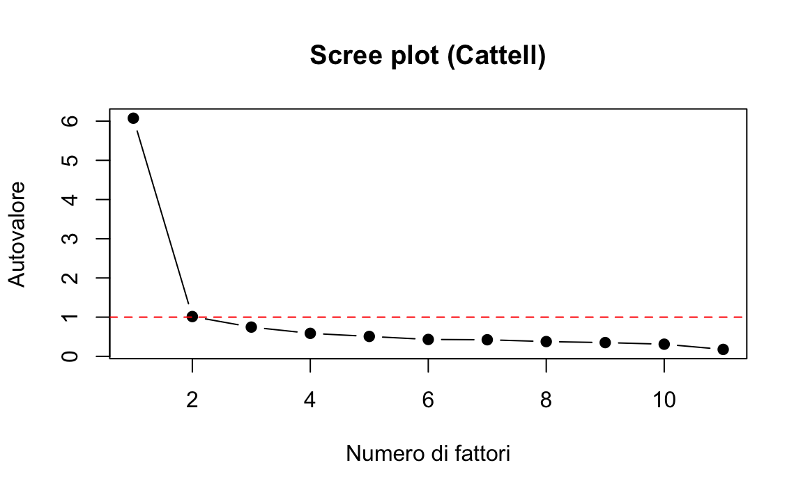
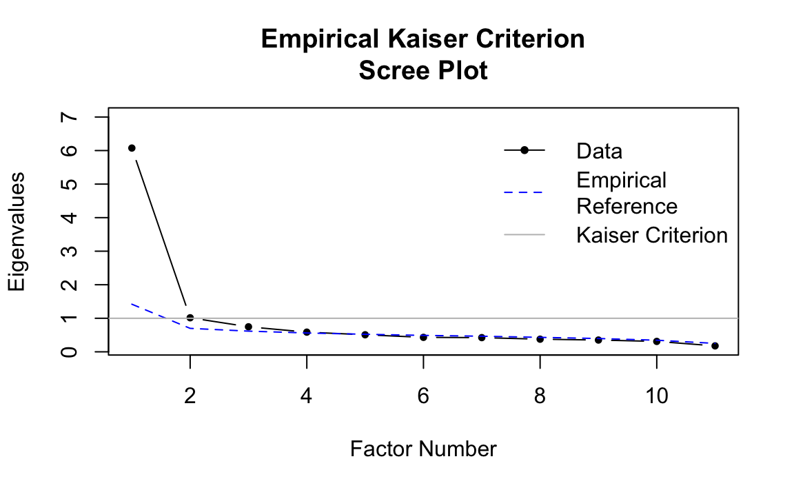
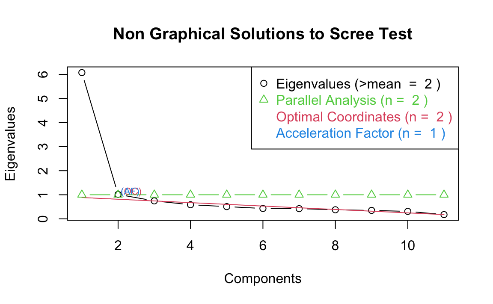
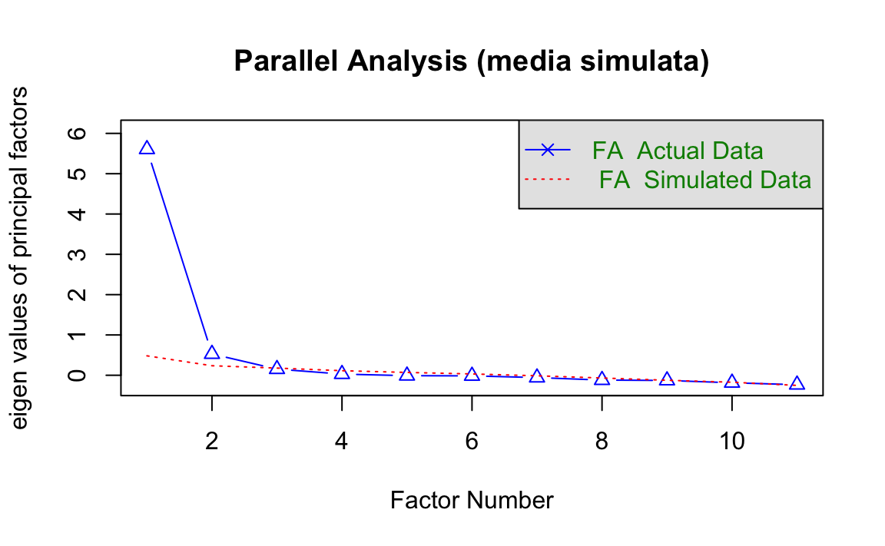
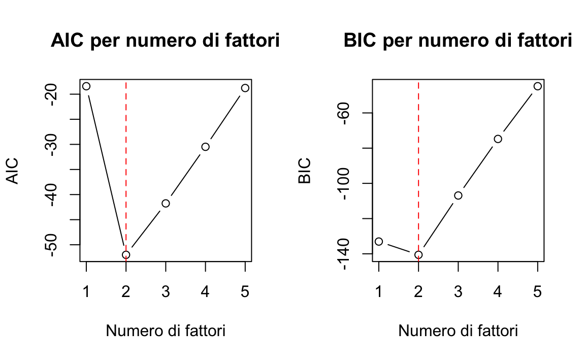
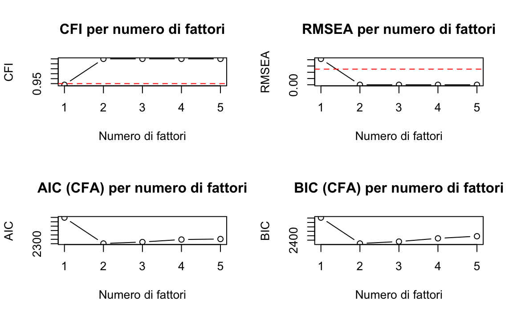
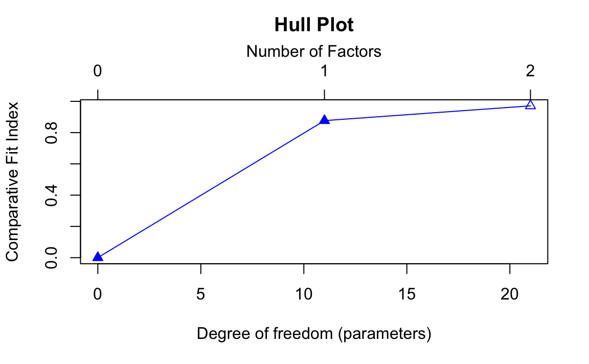
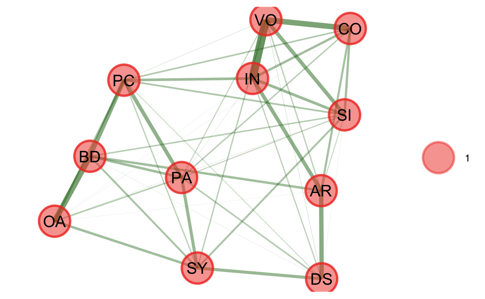

# library(devtools)
# install_github("jmbh/fspe")
here::here("code", "_common.R") |>
source()
# Load packages
if (!requireNamespace("pacman")) install.packages("pacman")
pacman::p_load(
lavaan, psych, paran, fspe, nFactors, semTools, EFAtools, MASS,
EFAfactors, EGAnet, latentFactoR, REFA
)28 Determinare il numero dei fattori
In questo capitolo imparerai:
- determinare il numero di fattori da estrarre nell’analisi fattoriale.
Prerequisiti
- Leggere l’articolo How many factors to retain in exploratory factor analysis? A critical overview of factor retention methods (Goretzko, 2025).
Preparazione del Notebook
28.1 Introduzione
L’Analisi Fattoriale Esplorativa (EFA) è uno strumento fondamentale nella costruzione e valutazione di test psicologici. Essa consente di esplorare la struttura latente sottostante a un insieme di variabili osservate. Uno degli aspetti più delicati dell’EFA è la determinazione del numero di fattori da estrarre, nota anche come factor retention. Una scelta errata può compromettere l’intera analisi, portando a:
- Sottofattorizzazione: sottostimare il numero di fattori, rischiando di distorcere la struttura latente e generare caricamenti spurii (cross-loadings);
- Sovrafattorizzazione: estrarre più fattori del necessario, introducendo elementi poco interpretabili. Questo errore è meno grave, purché venga riconosciuto e gestito opportunamente.
28.1.1 Tre domande fondamentali sulla dimensionalità di un test
- Quante dimensioni? Alcuni test misurano un solo costrutto latente, altri ne misurano diversi.
- Le dimensioni sono correlate? Se sì, è opportuno utilizzare metodi di rotazione obliqua.
- Cosa significano le dimensioni? L’interpretazione teorica dei fattori è cruciale per l’applicazione pratica del test.
Questo capitolo presenta e confronta i principali approcci proposti per determinare il numero ottimale di fattori, illustrandone i presupposti, i punti di forza e le limitazioni.
28.2 Metodi basati sugli autovalori
28.2.1 Kaiser-Guttman Rule
Retiene i fattori con autovalore > 1 (solo per matrici di correlazione). Anche se molto diffuso, è fortemente sconsigliato: ha una tendenza sistematica alla sovrafattorizzazione. È inappropriato per dati non standardizzati o con bassa comunalità.
28.2.2 Scree Test (Cattell)
Grafico degli autovalori decrescenti: il numero di fattori corrisponde al punto prima del “gomito”. Soggettivo e a bassa affidabilità.
28.2.3 Valore medio degli autovalori
Retiene i fattori con autovalore maggiore della media degli autovalori. Alternativa alla regola di Kaiser, ma ancora euristica.
28.2.4 Metodi Avanzati
- Empirical Kaiser Criterion (EKC): corregge per numerosità campionaria e varianza cumulata. Buona performance solo in strutture semplici e unidimensionali.
-
STOC e STAF: automatizzano lo scree test via algoritmi (es. accelerazione della pendenza) – implementate in
nFactors.
28.3 Metodi Basati sulla Simulazione
28.3.1 Parallel Analysis (PA)
Considerata lo “standard aureo”. Confronta gli autovalori empirici con quelli derivati da dati casuali:
- variante standard: usa la media degli autovalori simulati;
- variante di Glorfeld: usa il 95° percentile per essere più conservativa;
- funzioni:
fa.parallel()del pacchettopsych.
28.3.2 Comparison Data (CD)
Usa bootstrap e riproduce la matrice di correlazione. Confronta soluzioni adiacenti con un test di Mann-Whitney sugli RMSE. Utile con fattori correlati, ma tende a sovrafattorizzare se non ben calibrato. Implementato in EFAtools.
28.4 Approcci basati sul confronto tra modelli
28.4.1 Criteri Informativi: AIC, BIC
Utilizzano la verosimiglianza e penalizzano la complessità del modello.
- AIC: tende a selezionare modelli più complessi;
- BIC: più conservativo.
28.4.2 Indici di Fit:
Gli indicici di fit come RMSEA, CFI, SRMR, ecc. sono usati più comunemente in CFA, ma sono meno affidabili in EFA a causa della dipendenza da dimensione campionaria e altri fattori.
28.4.3 Metodo Hull
Il metodo Hull (Lorenzo-Seva, Timmerman, & Kiers, 2011) è un approccio grafico per la determinazione del numero ottimale di fattori. L’idea di base è bilanciare bontà dell’adattamento e parsimonia del modello (cioè la semplicità).
Come funziona:
- si adattano diversi modelli fattoriali con un numero crescente di fattori;
- per ciascun modello, si registra un indice di fit (es. CFI) e i gradi di libertà;
- si costruisce il “convex hull”, ovvero il contorno convesso che racchiude i punti CFI ~ gradi di libertà;
- si identifica il punto sul contorno del hull che rappresenta il miglior compromesso tra fit accettabile e modello semplice (cioè con più gradi di libertà).
Vantaggi:
- tende a evitare la sovrafattorizzazione, comune in altri metodi;
- ha buone prestazioni quando il modello è ben sovradeterminato (cioè ogni fattore è misurato da molte variabili);
- è adatto anche in presenza di fattori correlati.
28.5 Minimum Average Partial (MAP)
Test che valuta la media delle correlazioni parziali residue dopo estrazione di i componenti. Retiene il numero di componenti che minimizza questa media. È implementato in vss() del pacchetto psych.
28.6 Approcci moderni
28.6.1 Analisi Esplorativa della Rete (EGA)
L’Exploratory Graph Analysis (EGA) è un metodo alternativo all’analisi fattoriale esplorativa (EFA), che non si basa sull’ipotesi di fattori latenti comuni, ma sull’identificazione di comunità di variabili all’interno di un modello a rete.
- In EGA, le variabili osservate (es. item di un test) sono rappresentate come nodi di una rete.
- Le connessioni (archi) tra i nodi riflettono correlazioni parziali standardizzate, cioè relazioni tra due variabili controllando per tutte le altre.
- Il modello statistico di base è il Gaussian Graphical Model (GGM), stimato con un metodo di massima verosimiglianza penalizzata (regularization), che tende ad annullare le correlazioni più deboli, producendo reti sparse (con pochi collegamenti).
- All’interno di questa rete, le variabili fortemente collegate tra loro tendono a raggrupparsi in comunità (clusters), che vengono interpretate come fattori.
Vantaggi dell’EGA:
- è particolarmente utile in condizioni in cui:
- le comunalità sono basse (cioè le variabili condividono poca varianza comune),
- i dati sono ordinali o non normalmente distribuiti.
- rispetto all’EFA tradizionale, EGA è più robusto a strutture complesse o deboli.
Come viene determinato il numero di fattori?
Il numero di comunità (e quindi di fattori) viene identificato attraverso algoritmi di rilevamento delle comunità, come il walktrap algorithm, che cerca sottogruppi fortemente interconnessi all’interno della rete.
In sintesi, EGA fornisce una rappresentazione grafica e interpretabile della struttura fattoriale dei dati, e può essere usato per decidere quanti fattori estrarre in un’analisi esplorativa.
28.7 Metodi Basati su Machine Learning
28.7.1 Factor Forest (ML)
Approccio machine learning addestrato su dati simulati. Molto preciso, ma dipende da modelli preaddestrati. Implementato in latentFactoR.
28.7.2 Comparison Data Forest (CDF)
Versione più leggera del Factor Forest basata su CD + Random Forest. Meno accurata ma più accessibile. Implementazione disponibile su OSF.
28.7.3 Regularized EFA (REFA)
Utilizza penalizzazioni (LASSO, Ridge, MC+) per ottenere strutture sparse. Può essere utile per l’identificazione automatica dei fattori. Implementazioni: fanc, regsem, lslx.
28.8 Implementazione in R
Per confrontare i metodi discussi per la scelta del numero \(m\) di fattori usiamo una matrice di correlazioni calcolata sulle sottoscale della WAIS. Le 11 sottoscale del test sono le seguenti:
- X1 = Information
- X2 = Comprehension
- X3 = Arithmetic
- X4 = Similarities
- X5 = Digit.span
- X6 = Vocabulary
- X7 = Digit.symbol
- X8 = Picture.completion
- X9 = Block.design
- X10 = Picture.arrangement
- X11 = Object.
I dati sono stati ottenuti dal manuale della III edizione.
varnames <- c(
"IN", "CO", "AR", "SI", "DS", "VO", "SY", "PC",
"BD", "PA", "OA", "AG", "ED"
)
temp <- matrix(c(
1, 0.67, 0.62, 0.66, 0.47, 0.81, 0.47, 0.60, 0.49, 0.51, 0.41,
-0.07, 0.66, .67, 1, 0.54, 0.60, 0.39, 0.72, 0.40, 0.54, 0.45,
0.49, 0.38, -0.08, 0.52, .62, .54, 1, 0.51, 0.51, 0.58, 0.41,
0.46, 0.48, 0.43, 0.37, -0.08, 0.49, .66, .60, .51, 1, 0.41,
0.68, 0.49, 0.56, 0.50, 0.50, 0.41, -0.19, 0.55, .47, .39, .51,
.41, 1, 0.45, 0.45, 0.42, 0.39, 0.42, 0.31, -0.19, 0.43,
.81, .72, .58, .68, .45, 1, 0.49, 0.57, 0.46, 0.52, 0.40, -0.02,
0.62, .47, .40, .41, .49, .45, .49, 1, 0.50, 0.50, 0.52, 0.46,
-0.46, 0.57, .60, .54, .46, .56, .42, .57, .50, 1, 0.61, 0.59,
0.51, -0.28, 0.48, .49, .45, .48, .50, .39, .46, .50, .61, 1,
0.54, 0.59, -0.32, 0.44, .51, .49, .43, .50, .42, .52, .52, .59,
.54, 1, 0.46, -0.37, 0.49, .41, .38, .37, .41, .31, .40, .46, .51,
.59, .46, 1, -0.28, 0.40, -.07, -.08, -.08, -.19, -.19, -.02,
-.46, -.28, -.32, -.37, -.28, 1, -0.29, .66, .52, .49, .55, .43,
.62, .57, .48, .44, .49, .40, -.29, 1
), nrow = 13, ncol = 13, byrow = TRUE)
colnames(temp) <- varnames
rownames(temp) <- varnames
wais_cor <- temp[1:11, 1:11]
wais_cor
#> IN CO AR SI DS VO SY PC BD PA OA
#> IN 1.00 0.67 0.62 0.66 0.47 0.81 0.47 0.60 0.49 0.51 0.41
#> CO 0.67 1.00 0.54 0.60 0.39 0.72 0.40 0.54 0.45 0.49 0.38
#> AR 0.62 0.54 1.00 0.51 0.51 0.58 0.41 0.46 0.48 0.43 0.37
#> SI 0.66 0.60 0.51 1.00 0.41 0.68 0.49 0.56 0.50 0.50 0.41
#> DS 0.47 0.39 0.51 0.41 1.00 0.45 0.45 0.42 0.39 0.42 0.31
#> VO 0.81 0.72 0.58 0.68 0.45 1.00 0.49 0.57 0.46 0.52 0.40
#> SY 0.47 0.40 0.41 0.49 0.45 0.49 1.00 0.50 0.50 0.52 0.46
#> PC 0.60 0.54 0.46 0.56 0.42 0.57 0.50 1.00 0.61 0.59 0.51
#> BD 0.49 0.45 0.48 0.50 0.39 0.46 0.50 0.61 1.00 0.54 0.59
#> PA 0.51 0.49 0.43 0.50 0.42 0.52 0.52 0.59 0.54 1.00 0.46
#> OA 0.41 0.38 0.37 0.41 0.31 0.40 0.46 0.51 0.59 0.46 1.0028.9 Metodi basati sugli autovalori
28.9.1 Kaiser-Guttman Rule
Spiegazione: la regola di Kaiser suggerisce di mantenere i fattori con autovalori maggiori di 1.
Problema: è noto che sovrastima il numero di fattori, specialmente in campioni piccoli o quando le comunalità sono basse.
28.9.2 Scree Plot (Cattell)
# Scree plot
plot(eigenvalues, type = "b", pch = 19, main = "Scree plot (Cattell)",
xlab = "Numero di fattori", ylab = "Autovalore")
abline(h = 1, col = "red", lty = 2)
Spiegazione: Il numero ottimale di fattori corrisponde al punto prima del “gomito” nella curva degli autovalori decrescenti.
Problema: il metodo è visivo e soggettivo, quindi ha bassa affidabilità.
28.9.3 Regola del valore medio degli autovalori
Spiegazione: mantiene solo i fattori con autovalori superiori alla media.
Questa è una variante della regola di Kaiser, meno estrema, ma comunque euristica.
28.9.4 Metodi avanzati con il pacchetto nFactors
# Metodo EKC (Empirical Kaiser Criterion)
ekc_result <- efa.ekc(sample.cov = wais_cor, sample.nobs = 300) # Specificare N = numerosità stimata
ekc_result
#>
#> Empirical Kaiser Criterion suggests 4 factors.
#> Traditional Kaiser Criterion suggests 2 factors.
#>
#> Sample Ref
#> 1 6.074 1.420
#> 2 1.015 0.699
#> 3 0.746 0.617
#> 4 0.587 0.562
#> 5 0.508 0.523
#> 6 0.431 0.490
#> 7 0.423 0.465
#> 8 0.377 0.431
#> 9 0.351 0.397
#> 10 0.310 0.346
#> 11 0.177 0.251
Spiegazione: EKC è una versione empiricamente corretta della regola di Kaiser, che tiene conto del campione, della forma della distribuzione, e della varianza spiegata cumulativa.
È più affidabile, soprattutto in strutture semplici.
28.9.5 STOC e STAF (versioni automatizzate dello Scree Test)
# Calcola autovalori simulati
nfac <- nFactors::nScree(x = eigenvalues)
summary(nfac)
#> Report For a nScree Class
#>
#> Details: components
#>
#> Eigenvalues Prop Cumu Par.Analysis Pred.eig OC Acc.factor AF
#> 1 6 1 1 1 1 NA (< AF)
#> 2 1 0 1 1 1 (< OC) 5
#> 3 1 0 1 1 1 0
#> 4 1 0 1 1 1 0
#> 5 1 0 1 1 0 0
#> 6 0 0 1 1 0 0
#> 7 0 0 1 1 0 0
#> 8 0 0 1 1 0 0
#> 9 0 0 1 1 0 0
#> 10 0 0 1 1 NA 0
#> 11 0 0 1 1 NA NA
#>
#>
#> Number of factors retained by index
#>
#> noc naf nparallel nkaiser
#> 1 2 1 2 2
# Plot per confronto
plotnScree(nfac)
Spiegazione:
- STOC = Optimal Coordinate
-
STAF = Acceleration Factor
Sono versioni statistiche dello scree test, che usano variazioni nella pendenza degli autovalori.
28.10 Metodi basati sulla simulazione
28.10.1 Parallel Analysis (PA)
# Variante standard: confronto con media degli autovalori simulati
set.seed(123) # Per replicabilità
fa.parallel(wais_cor, n.obs = 300, fa = "fa", fm = "ml",
main = "Parallel Analysis (media simulata)")
#> Parallel analysis suggests that the number of factors = 2 and the number of components = NA
28.10.2 Spiegazione
- Confronta gli autovalori osservati con quelli ottenuti da dati casuali.
- Se l’autovalore osservato > simulato → mantieni il fattore.
- Il metodo è molto affidabile, specie se il numero di soggetti (
n.obs) è corretto. - La variante di Glorfeld (non mostrata) è più conservativa (riduce il rischio di sovrafattorizzare).
28.10.3 Comparison Data (CD)
# Metodo Comparison Data
# Richiede che i dati siano in formato "raw" (non solo matrice di correlazione)
# Quindi, simuliamo dati coerenti con la matrice di correlazione per scopi didattici:
set.seed(123)
N <- 300 # ipotetica numerosità campionaria
wais_sim <- mvrnorm(N, mu = rep(0, 11), Sigma = wais_cor)
colnames(wais_sim) <- colnames(wais_cor)
# Applica il metodo Comparison Data
cd_result <- EFAtools::CD(
x = wais_sim,
n_factors_max = 6, # Numero massimo di fattori da testare
N_pop = 10000, # Dimensione della popolazione simulata
N_samples = 500, # Numero di campioni bootstrap
alpha = 0.3, # Soglia per il test di Mann-Whitney
use = "pairwise.complete.obs", # Gestione dei dati mancanti
cor_method = "pearson", # Metodo di correlazione
max_iter = 50 # Iterazioni massime
)
# Mostra il riepilogo dei risultati
cd_result
#> The number of factors suggested by CD is .28.10.4 Spiegazione
- Il metodo Comparison Data (CD) simula set di dati “riprodotti” con un certo numero di fattori.
- Confronta il RMSE delle soluzioni successive con un test di Mann-Whitney.
- Il numero ottimale di fattori è quello oltre il quale non si osserva un miglioramento significativo.
-
Attenzione: può sovrafattorizzare se
max_factorsè troppo alto o se i dati sono rumorosi. - Molto utile con fattori correlati e strutture complesse.
In sintesi:
- PA (Parallel Analysis) è il metodo di riferimento, raccomandato dalla maggior parte delle linee guida (es. Fabrigar et al., 1999).
- CD (Comparison Data) è utile in presenza di fattori obliqui o bassa comunalità, ma può richiedere parametri aggiustati per una stima più accurata.
- Evita di usare un solo criterio: combina i risultati con quelli basati sugli autovalori e sulle analisi di bontà di adattamento (RMSEA, BIC, ecc.).
28.11 Indici di informazione
Consideriamo ora un’implementazione in R per determinare il numero di fattori da estrarre dalla matrice di correlazione WAIS utilizzando metodi basati sugli indici di informazione.
dim(wais_cor) # Dovrebbe essere 11x11
#> [1] 11 11-
Criteri Informativi AIC e BIC:
- Calcolo di AIC e BIC per modelli con 1-5 fattori.
- Visualizzazione grafica per identificare il punto di minimo.
# Calcolo il numero di fattori usando AIC e BIC
fa_fit <- function(nfactors, x, n.obs = 100) {
fit <- fa(x, nfactors = nfactors, fm = "ml", n.obs = n.obs)
chi <- fit$STATISTIC
df <- fit$dof
pval <- fit$PVAL
aic <- chi - 2 * df
bic <- chi - df * log(n.obs)
list(nfactors = nfactors, chi = chi, df = df, pval = pval, aic = aic, bic = bic)
}# Assumiamo una dimensione campionaria di 100
n.obs <- 100
# Calcoliamo AIC e BIC per diversi numeri di fattori
results <- data.frame()
for (i in 1:5) {
res <- fa_fit(i, wais_cor, n.obs)
results <- rbind(results, data.frame(
nfactors = i,
chi_square = res$chi,
df = res$df,
p_value = res$pval,
aic = res$aic,
bic = res$bic
))
}# Visualizziamo i risultati
print(results)
#> nfactors chi_square df p_value aic bic
#> 1 1 69.589 44 0.008288 -18.41 -133.04
#> 2 2 15.998 34 0.996287 -52.00 -140.58
#> 3 3 8.244 25 0.999341 -41.76 -106.89
#> 4 4 3.515 17 0.999787 -30.48 -74.77
#> 5 5 1.229 10 0.999561 -18.77 -44.82# Grafici per AIC e BIC
par(mfrow = c(1, 2))
plot(results$nfactors, results$aic, type = "b", main = "AIC per numero di fattori",
xlab = "Numero di fattori", ylab = "AIC", xaxt = "n")
axis(1, at = 1:5)
abline(v = which.min(results$aic), col = "red", lty = 2)
plot(results$nfactors, results$bic, type = "b", main = "BIC per numero di fattori",
xlab = "Numero di fattori", ylab = "BIC", xaxt = "n")
axis(1, at = 1:5)
abline(v = which.min(results$bic), col = "red", lty = 2)
par(mfrow = c(1, 1))
-
Indici di Fit da CFA:
- Implementazione di CFI, TLI, RMSEA e SRMR.
- Grafici per valutare quando questi indici raggiungono valori accettabili.
- Criteri di riferimento: CFI > 0.95, RMSEA < 0.05.
# Definiamo i modelli CFA per diversi numeri di fattori
fit_indices <- data.frame()
for (i in 1:5) {
# Estraiamo prima i fattori con analisi fattoriale esplorativa
fa_result <- fa(wais_cor, nfactors = i, fm = "ml", rotate = "varimax")
# Creiamo il modello CFA basato sui loadings più alti
model_syntax <- ""
for (j in 1:i) {
# Seleziona le variabili con i loadings più alti per ciascun fattore
vars <- names(sort(abs(fa_result$loadings[, j]), decreasing = TRUE)[1:ceiling(11/i)])
model_syntax <- paste0(model_syntax, "F", j, " =~ ", paste(vars, collapse = " + "), "\n")
}
# Eseguiamo la CFA
try({
fit <- cfa(model_syntax, sample.cov = wais_cor, sample.nobs = n.obs)
indices <- fitMeasures(fit, c("chisq", "df", "pvalue", "cfi", "tli", "rmsea", "srmr", "aic", "bic"))
fit_indices <- rbind(fit_indices, data.frame(
nfactors = i,
chisq = indices["chisq"],
df = indices["df"],
pvalue = indices["pvalue"],
cfi = indices["cfi"],
tli = indices["tli"],
rmsea = indices["rmsea"],
srmr = indices["srmr"],
aic = indices["aic"],
bic = indices["bic"]
))
}, silent = TRUE)
}# Visualizziamo gli indici di fit
print(fit_indices)
#> nfactors chisq df pvalue cfi tli rmsea srmr aic bic
#> chisq 1 74.162 44 0.002985 0.9476 0.9345 0.0828 0.05991 2598 2655
#> chisq1 2 15.429 32 0.994044 1.0000 1.0430 0.0000 0.02935 2302 2362
#> chisq2 3 16.482 30 0.978282 1.0000 1.0383 0.0000 0.03198 2319 2384
#> chisq3 4 13.998 27 0.981271 1.0000 1.0429 0.0000 0.02705 2348 2420
#> chisq4 5 5.737 20 0.999209 1.0000 1.0635 0.0000 0.01502 2353 2444# Visualizziamo graficamente gli indici di fit
if (nrow(fit_indices) > 0) {
par(mfrow = c(2, 2))
plot(fit_indices$nfactors, fit_indices$cfi, type = "b", main = "CFI per numero di fattori",
xlab = "Numero di fattori", ylab = "CFI", xaxt = "n")
axis(1, at = 1:5)
abline(h = 0.95, col = "red", lty = 2)
plot(fit_indices$nfactors, fit_indices$rmsea, type = "b", main = "RMSEA per numero di fattori",
xlab = "Numero di fattori", ylab = "RMSEA", xaxt = "n")
axis(1, at = 1:5)
abline(h = 0.05, col = "red", lty = 2)
plot(fit_indices$nfactors, fit_indices$aic, type = "b", main = "AIC (CFA) per numero di fattori",
xlab = "Numero di fattori", ylab = "AIC", xaxt = "n")
axis(1, at = 1:5)
plot(fit_indices$nfactors, fit_indices$bic, type = "b", main = "BIC (CFA) per numero di fattori",
xlab = "Numero di fattori", ylab = "BIC", xaxt = "n")
axis(1, at = 1:5)
par(mfrow = c(1, 1))
}
-
Test del Chi-Quadrato:
- Confronto incrementale tra modelli con diverso numero di fattori.
- Test della significatività della differenza di fit.
# Calcoliamo la differenza di chi-quadrato tra modelli consecutivi
if (nrow(results) > 1) {
chi_diff <- data.frame(
comparison = character(),
chi_diff = numeric(),
df_diff = numeric(),
p_value = numeric()
)
for (i in 2:nrow(results)) {
chi_diff_val <- results$chi_square[i-1] - results$chi_square[i]
df_diff_val <- results$df[i-1] - results$df[i]
p_val <- 1 - pchisq(chi_diff_val, df_diff_val)
chi_diff <- rbind(chi_diff, data.frame(
comparison = paste(i-1, "vs", i),
chi_diff = chi_diff_val,
df_diff = df_diff_val,
p_value = p_val
))
}
print("Test del chi-quadrato per confronto di modelli:")
print(chi_diff)
}
#> [1] "Test del chi-quadrato per confronto di modelli:"
#> comparison chi_diff df_diff p_value
#> 1 1 vs 2 53.591 10 5.782e-08
#> 2 2 vs 3 7.754 9 5.591e-01
#> 3 3 vs 4 4.729 8 7.861e-01
#> 4 4 vs 5 2.286 7 9.423e-01-
Sintesi dei Risultati:
- Riepilogo delle indicazioni dai vari indici.
- Raccomandazione sul numero ottimale di fattori.
cat("\nSintesi dei risultati:\n")
#>
#> Sintesi dei risultati:
cat("Numero di fattori suggerito da AIC:", which.min(results$aic), "\n")
#> Numero di fattori suggerito da AIC: 2
cat("Numero di fattori suggerito da BIC:", which.min(results$bic), "\n")
#> Numero di fattori suggerito da BIC: 2
if (nrow(fit_indices) > 0) {
# Per CFI vogliamo valori > 0.95
good_cfi <- which(fit_indices$cfi > 0.95)
if (length(good_cfi) > 0) {
cat("Numero minimo di fattori con CFI > 0.95:", min(good_cfi), "\n")
}
# Per RMSEA vogliamo valori < 0.05
good_rmsea <- which(fit_indices$rmsea < 0.05)
if (length(good_rmsea) > 0) {
cat("Numero minimo di fattori con RMSEA < 0.05:", min(good_rmsea), "\n")
}
}
#> Numero minimo di fattori con CFI > 0.95: 2
#> Numero minimo di fattori con RMSEA < 0.05: 2
if (nrow(chi_diff) > 0) {
# Per il test chi-quadrato, cerchiamo il primo confronto non significativo
non_sig <- which(chi_diff$p_value > 0.05)
if (length(non_sig) > 0) {
cat("Basato sul test del chi-quadrato, il numero ottimale di fattori è:", as.numeric(substr(chi_diff$comparison[min(non_sig)], 1, 1)), "\n")
}
}
#> Basato sul test del chi-quadrato, il numero ottimale di fattori è: 228.12 Metodo Hull
Il metodo è implementato nel pacchetto EFAtools in R (Steiner & Gruber, 2020).
Nel grafico risultante, si osserva la curva dei valori di CFI in funzione dei gradi di libertà. Il metodo Hull seleziona il punto “di gomito”, dove il modello ha ancora un buon fit ma con la massima parsimonia. In alcuni casi, il metodo può suggerire ad esempio che una soluzione a un fattore è preferibile, se l’aggiunta di ulteriori fattori non migliora significativamente l’adattamento.
Hull(
wais_sim,
fa = "fa",
nfact = 6,
cor.type = "pearson",
use = "pairwise.complete.obs",
vis = TRUE,
plot = TRUE
)
#> The number of factors suggested by Hull is 1 .
#> The number of factors suggested by Hull is 1 .
28.13 Metodo MAP
Il MAP test valuta, per ogni possibile numero di componenti estratti, quanto rimane di correlazione “spuria” nei residui. Il numero ottimale è quello che minimizza la media delle correlazioni parziali residue, cioè quello che riesce a “pulire” meglio la matrice di correlazione iniziale.
# Applica il metodo MAP con la funzione vss()
vss_map <- vss(
x = wais_cor,
n = 6, # numero massimo di fattori/componenti da testare
n.obs = 100, # numero di osservazioni
rotate = "none", # nessuna rotazione per mantenere interpretabilità
plot = FALSE # non mostrare il grafico automaticamente
)
vss_map
#>
#> Very Simple Structure
#> Call: vss(x = wais_cor, n = 6, rotate = "none", n.obs = 100, plot = FALSE)
#> VSS complexity 1 achieves a maximimum of 0.92 with 2 factors
#> VSS complexity 2 achieves a maximimum of 0.95 with 5 factors
#>
#> The Velicer MAP achieves a minimum of 0.03 with 2 factors
#> BIC achieves a minimum of -140.3 with 2 factors
#> Sample Size adjusted BIC achieves a minimum of -32.93 with 2 factors
#>
#> Statistics by number of factors
#> vss1 vss2 map dof chisq prob sqresid fit RMSEA BIC SABIC complex
#> 1 0.92 0.00 0.033 44 72.00 0.0049 3.2 0.92 0.079 -131 8.3 1.0
#> 2 0.92 0.94 0.029 34 16.27 0.9956 2.3 0.94 0.000 -140 -32.9 1.2
#> 3 0.83 0.95 0.044 25 8.40 0.9992 1.7 0.96 0.000 -107 -27.8 1.4
#> 4 0.92 0.95 0.071 17 3.94 0.9995 1.7 0.96 0.000 -74 -20.7 1.4
#> 5 0.92 0.95 0.107 10 1.46 0.9990 1.5 0.96 0.000 -45 -13.0 1.5
#> 6 0.92 0.95 0.150 4 0.31 0.9894 1.4 0.96 0.000 -18 -5.5 1.6
#> eChisq SRMR eCRMS eBIC
#> 1 41.515 0.0614 0.069 -161
#> 2 8.201 0.0273 0.035 -148
#> 3 2.926 0.0163 0.024 -112
#> 4 1.115 0.0101 0.018 -77
#> 5 0.326 0.0054 0.013 -46
#> 6 0.082 0.0027 0.010 -1828.13.1 Sintesi dei principali risultati
| Metodo | Numero ottimale di fattori | Valore ottimale |
|---|---|---|
| MAP (Velicer) | 2 | 0.03 (minimo) |
| BIC | 2 | -140.3 (minimo) |
| BIC corretto per n (SABIC) | 2 | -32.93 (minimo) |
| VSS complessità 1 | 2 | 0.92 (massimo) |
| VSS complessità 2 | 5 | 0.95 (massimo) |
28.13.2 Velicer MAP
- Valuta la media delle correlazioni parziali residue.
- L’obiettivo è minimizzare la varianza residua non spiegata dai fattori.
- Risultato: minimo a 2 fattori, con valore 0.03 → suggerisce 2 fattori.
28.13.3 BIC e SABIC
- Criteri informativi che bilanciano bontà del fit e parsimonia.
- Più basso è il valore, meglio è.
- Entrambi i criteri (sia BIC classico che SABIC) raggiungono il minimo a 2 fattori.
28.13.4 SS (Very Simple Structure)
- Misura quanto bene una struttura semplice (con pochi caricamenti per variabile) si adatta ai dati.
- Due versioni:
- Complessità 1: solo il caricamento maggiore per ogni variabile.
- Complessità 2: primi due caricamenti per variabile.
- Complessità 1 → massimo a 2 fattori (0.92)
- Complessità 2 → massimo a 5 fattori (0.95)
🔎 Nota: VSS complessità 2 è più permissiva e tende a favorire strutture più complesse.
Interpretazione complessiva.
Tutti i criteri basati su residui o penalizzazione della complessità (MAP, BIC, SABIC, VSS-1) concordano nel suggerire una soluzione a 2 fattori.
Solo VSS-2 (più permissivo) suggerisce 5 fattori, ma questa soluzione è meno parsimoniosa e più soggetta a sovrafattorizzazione.
In sintesi, sulla base di criteri oggettivi e parsimoniosi come MAP, BIC, SABIC, e VSS a complessità 1, una soluzione a 2 fattori sembra ottimale per questi dati WAIS. L’adozione di criteri informativi e basati sui residui, come MAP e BIC, è fortemente raccomandata rispetto a metodi più soggettivi o sovraestimanti come Kaiser o Scree test.
28.14 Exploratory Graph Analysis (EGA)
L’Exploratory Graph Analysis (EGA) è un metodo innovativo per identificare la struttura latente dei dati basato su modelli a rete, piuttosto che sui tradizionali modelli fattoriali. È implementato nel pacchetto EGAnet, sviluppato da Golino e colleghi. Il metodo è stato introdotto da Golino & Epskamp (2017) e perfezionato in studi successivi (Christensen, Golino & Silvia, 2020; Golino et al., 2020).
28.14.1 Caratteristiche principali di EGA:
- Utilizza il graphical lasso per stimare le correlazioni parziali tra variabili, costruendo così una rete sparsa (solo le relazioni più forti restano).
- Identifica comunità di variabili all’interno della rete, che corrispondono a fattori latenti.
- È particolarmente utile quando:
- le comunalità sono basse,
- la struttura fattoriale non è ben definita,
- si lavora con dati ordinali o non normali.
Applichiamo l’EGA alla matrice di correlazione delle 11 sottoscale della WAIS.
# Applica l'EGA alla matrice di correlazione WAIS
ega_result <- EGA(
data = wais_cor, # Matrice di correlazione tra le 11 sottoscale
n = 300, # Numero di soggetti nel campione
model = "glasso", # Metodo di stima: graphical lasso
type = "correlation", # Specifica che stiamo passando una matrice di correlazione
plot.EGA = TRUE # Visualizza il grafo delle comunità (dimensioni)
)
-
model = "glasso": applica una penalizzazione (lasso) per ridurre il numero di connessioni deboli tra variabili. -
plot.EGA = TRUE: mostra un grafo con le sottoscale collegate in base alla loro correlazione condizionale. -
ega_result$wc: contiene l’assegnazione di ciascuna variabile a una comunità, interpretata come un fattore latente.
Interpretazione dei risultati:
# Riepilogo generale
summary(ega_result)
#> Model: GLASSO (EBIC with gamma = 0.5)
#> Correlations: auto
#> Lambda: 0.081 (n = 100, ratio = 0.1)
#>
#> Number of nodes: 11
#> Number of edges: 48
#> Edge density: 0.873
#>
#> Non-zero edge weights:
#> M SD Min Max
#> 0.099 0.088 0.003 0.421
#>
#> ----
#>
#> Algorithm: Louvain
#>
#> Number of communities: 1
#>
#> IN CO AR SI DS VO SY PC BD PA OA
#> 1 1 1 1 1 1 1 1 1 1 1
#>
#> ----
#>
#> Unidimensional Method: Louvain
#> Unidimensional: Yes
#>
#> ----
#>
#> TEFI: 0Vantaggi:
- non richiede ipotesi forti sulla distribuzione dei dati;
- più robusto dei metodi classici (EFA, PA) in presenza di comunalità basse;
- offre una visualizzazione intuitiva delle relazioni tra variabili.
💡 EGA può essere utilizzato sia per esplorare la dimensionalità di un set di item sia per decidere quanti fattori mantenere prima di una conferma con CFA.
28.15 Riflessioni Conclusive
Determinare il numero di fattori da estrarre in un’Analisi Fattoriale Esplorativa (EFA) rappresenta una delle sfide metodologiche più complesse nella costruzione di strumenti psicometrici. Nessun metodo è infallibile o universalmente valido: ogni tecnica presenta vantaggi, limiti e assunzioni specifiche. Per questo motivo, la triangolazione di più metodi e la riflessione teorica guidano le scelte più solide.
28.15.1 1. La scelta del numero di fattori: tra tecniche classiche e moderne
Le tecniche tradizionali, come la regola di Kaiser e lo scree test, sono state largamente impiegate per la loro semplicità, ma risultano oggi superate per via della loro tendenza sistematica alla sovra- o sotto-fattorizzazione. In particolare:
- La Parallel Analysis (PA) si conferma il metodo più raccomandato, grazie alla sua capacità di distinguere fattori reali da quelli generati dal rumore;
- Il metodo Comparison Data (CD) si dimostra utile con strutture complesse o fattori correlati, ma va calibrato attentamente;
- I criteri informativi (AIC, BIC) e gli indici di adattamento del modello (RMSEA, CFI) aggiungono elementi preziosi per valutare la bontà della soluzione, specialmente quando integrati con la CFA;
- Metodi recenti come MAP, Hull, EGA o Factor Forest offrono soluzioni promettenti, soprattutto in contesti con comunalità basse, dati non normali o ordinali.
28.15.2 2. Replicabilità: validare ciò che si scopre
Identificare una struttura fattoriale coerente è solo il primo passo. Per attribuire validità e generalizzabilità a una soluzione esplorativa, occorre valutarne la replicabilità:
- Replicazione in campioni indipendenti e validazione incrociata servono a testare la stabilità della struttura in sottogruppi differenti;
- La CFA permette di verificare, in modo formale, se una struttura fattoriale individuata in EFA è confermata da nuovi dati;
- Tecniche di ricampionamento (come il bootstrap) offrono ulteriori strumenti per stimare l’incertezza legata alla soluzione ottenuta.
Una struttura replicabile è più probabilmente una rappresentazione fedele dei costrutti latenti piuttosto che un artefatto del campione specifico.
28.15.3 3. Cosa fare con i fattori: applicazioni e criticità
Dopo aver identificato i fattori, è cruciale decidere come utilizzarli:
- Nei Modelli di Equazioni Strutturali (SEM), i fattori possono essere usati come predittori, mediatori, moderatori o esiti, con il vantaggio di modellare esplicitamente l’errore di misura;
- Al di fuori dei SEM, l’uso di punteggi fattoriali (calcolati come media, somma o compositi ponderati) va considerato con cautela, poiché può trascurare errori di misura o differenze di importanza tra variabili;
- In certi casi, compositi a pesi unitari possono essere preferibili a quelli ponderati, specialmente per garantire maggiore generalizzabilità e robustezza cross-campione.
La scelta operativa su come rappresentare e usare i fattori dovrebbe sempre essere coerente con le finalità della ricerca e con le caratteristiche dei dati.
28.15.4 4. Una visione integrata
In definitiva, la determinazione del numero di fattori, la replicabilità della soluzione e il modo in cui i fattori vengono utilizzati sono aspetti interdipendenti di un processo rigoroso e cumulativo. Una buona pratica psicometrica non si limita a identificare la struttura che “funziona meglio” nel proprio campione, ma valuta la stabilità della soluzione, il suo significato teorico e la sua applicazione pratica.
✏️ La validità di uno strumento psicologico non si esaurisce nella bontà del suo adattamento al campione corrente, ma nella sua capacità di riflettere stabilmente e in modo interpretabile i costrutti che intende misurare.
28.16 Session Info
sessionInfo()
#> R version 4.4.2 (2024-10-31)
#> Platform: aarch64-apple-darwin20
#> Running under: macOS Sequoia 15.4
#>
#> Matrix products: default
#> BLAS: /Library/Frameworks/R.framework/Versions/4.4-arm64/Resources/lib/libRblas.0.dylib
#> LAPACK: /Library/Frameworks/R.framework/Versions/4.4-arm64/Resources/lib/libRlapack.dylib; LAPACK version 3.12.0
#>
#> locale:
#> [1] C/UTF-8/C/C/C/C
#>
#> time zone: Europe/Rome
#> tzcode source: internal
#>
#> attached base packages:
#> [1] stats graphics grDevices utils datasets methods base
#>
#> other attached packages:
#> [1] REFA_0.1.0 latentFactoR_0.0.6 EGAnet_2.2.0
#> [4] EFAfactors_1.2.1 EFAtools_0.4.6 nFactors_2.4.1.1
#> [7] lattice_0.22-7 fspe_0.1.2 paran_1.5.3
#> [10] ggokabeito_0.1.0 see_0.11.0 MASS_7.3-65
#> [13] viridis_0.6.5 viridisLite_0.4.2 ggpubr_0.6.0
#> [16] ggExtra_0.10.1 gridExtra_2.3 patchwork_1.3.0
#> [19] bayesplot_1.11.1 semTools_0.5-7 semPlot_1.1.6
#> [22] lavaan_0.6-19 psych_2.5.3 scales_1.3.0
#> [25] markdown_2.0 knitr_1.50 lubridate_1.9.4
#> [28] forcats_1.0.0 stringr_1.5.1 dplyr_1.1.4
#> [31] purrr_1.0.4 readr_2.1.5 tidyr_1.3.1
#> [34] tibble_3.2.1 ggplot2_3.5.2 tidyverse_2.0.0
#> [37] here_1.0.1
#>
#> loaded via a namespace (and not attached):
#> [1] splines_4.4.2 later_1.4.2 XML_3.99-0.18
#> [4] rpart_4.1.24 lifecycle_1.0.4 Rdpack_2.6.4
#> [7] rstatix_0.7.2 rprojroot_2.0.4 rockchalk_1.8.157
#> [10] backports_1.5.0 magrittr_2.0.3 openxlsx_4.2.8
#> [13] Hmisc_5.2-3 rmarkdown_2.29 yaml_2.3.10
#> [16] httpuv_1.6.15 qgraph_1.9.8 zip_2.3.2
#> [19] reticulate_1.42.0 RColorBrewer_1.1-3 pbapply_1.7-2
#> [22] minqa_1.2.8 multcomp_1.4-28 abind_1.4-8
#> [25] quadprog_1.5-8 nnet_7.3-20 TH.data_1.1-3
#> [28] sandwich_3.1-1 arm_1.14-4 codetools_0.2-20
#> [31] tidyselect_1.2.1 farver_2.1.2 lme4_1.1-37
#> [34] stats4_4.4.2 base64enc_0.1-3 ddpcr_1.15.2
#> [37] jsonlite_2.0.0 Formula_1.2-5 survival_3.8-3
#> [40] emmeans_1.11.0 tools_4.4.2 sna_2.8
#> [43] Rcpp_1.0.14 glue_1.8.0 mnormt_2.1.1
#> [46] xfun_0.52 ranger_0.17.0 withr_3.0.2
#> [49] fastmap_1.2.0 GGally_2.2.1 boot_1.3-31
#> [52] digest_0.6.37 mi_1.1 timechange_0.3.0
#> [55] R6_2.6.1 mime_0.13 estimability_1.5.1
#> [58] colorspace_2.1-1 gtools_3.9.5 jpeg_0.1-11
#> [61] generics_0.1.3 data.table_1.17.0 corpcor_1.6.10
#> [64] htmlwidgets_1.6.4 ggstats_0.9.0 pkgconfig_2.0.3
#> [67] sem_3.1-16 gtable_0.3.6 SimCorMultRes_1.9.0
#> [70] htmltools_0.5.8.1 carData_3.0-5 parallelMap_1.5.1
#> [73] png_0.1-8 reformulas_0.4.0 rstudioapi_0.17.1
#> [76] tzdb_0.5.0 reshape2_1.4.4 statnet.common_4.11.0
#> [79] coda_0.19-4.1 checkmate_2.3.2 nlme_3.1-168
#> [82] nloptr_2.2.1 proxy_0.4-27 zoo_1.8-13
#> [85] parallel_4.4.2 miniUI_0.1.1.1 foreign_0.8-90
#> [88] pillar_1.10.2 grid_4.4.2 vctrs_0.6.5
#> [91] mlr_2.19.2 promises_1.3.2 car_3.1-3
#> [94] OpenMx_2.21.13 xtable_1.8-4 cluster_2.1.8.1
#> [97] GPArotation_2024.3-1 htmlTable_2.4.3 evaluate_1.0.3
#> [100] BBmisc_1.13 pbivnorm_0.6.0 mvtnorm_1.3-3
#> [103] cli_3.6.4 kutils_1.73 compiler_4.4.2
#> [106] rlang_1.1.5 ggsignif_0.6.4 fdrtool_1.2.18
#> [109] RcppArmadillo_14.4.1-1 plyr_1.8.9 stringi_1.8.7
#> [112] network_1.19.0 munsell_0.5.1 lisrelToR_0.3
#> [115] pacman_0.5.1 Matrix_1.7-3 ParamHelpers_1.14.2
#> [118] hms_1.1.3 glasso_1.11 shiny_1.10.0
#> [121] evd_2.3-7.1 rbibutils_2.3 ineq_0.2-13
#> [124] igraph_2.1.4 broom_1.0.8 RcppParallel_5.1.10
#> [127] fastmatch_1.1-6 xgboost_1.7.9.1